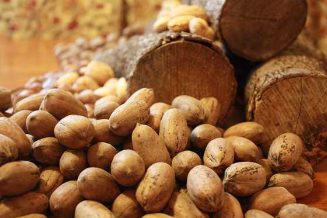
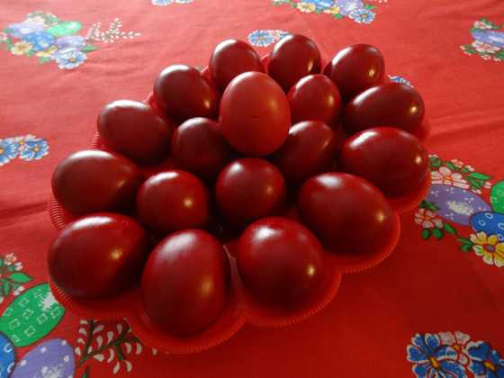
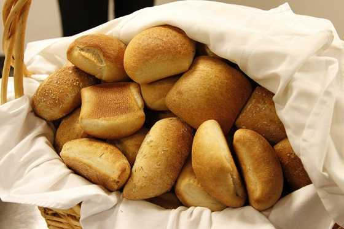
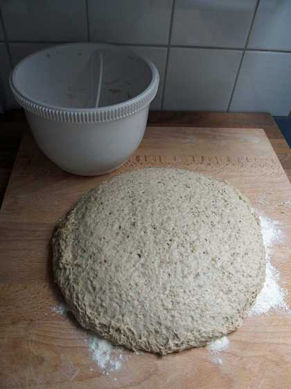

低糖質専門店 / 北海道江別市 野幌
niros bake
小麦粉も、砂糖も使わない。
それでも食べる楽しみは、ちゃんと広がる。
パンとスイーツとお弁当の、低糖質&グルテンフリーの専門店です。

ABOUT
お店のこと
niros bakeは、2022年6月18日に江別市野幌松並町でグランドオープンした低糖質専門店です。江別初の低糖質専門店として紹介されました。小麦粉と砂糖を使わず、パンと焼き菓子、お弁当をそろえています。
糖尿病の方、糖質制限をしている方、グルテンフリーを意識している方にも「食の楽しみを広げたい」。そんな考えが、お店の紹介から読み取れます。
- 小麦粉・砂糖不使用パンもスイーツも、材料から低糖質に。
- 糖質オフのお弁当ご飯を含めても控えめな糖質量のお弁当。
- グルテンフリーグルテンが気になる方にも。
お店の由来やオーナーの経歴、屋号の意味は確認できていないため記載していません。内容は公開情報(開店告知記事・Instagramプロフィール)に基づきます。




MENU
メニュー
以下は2022年のオープン当時に紹介されていた商品名です。現在の品ぞろえは変わっている可能性があります。価格: 準備中(最新はInstagramをご確認ください)
スイーツ(焼き菓子など)も扱いがあります。内容は準備中です。



VOICE
口コミ(イメージ例)
以下は制作側が作成したイメージ例で、実在のお客様の声ではありません。
イメージ例糖質を控えているので、パンを選べるだけでうれしい。ボリュームもあって満足でした。
ご来店のお客様(イメージ)
イメージ例お弁当がしっかり食べごたえあり。お昼に買って帰りました。
ご来店のお客様(イメージ)
イメージ例グルテンフリーのおやつを探していて見つけました。気軽に立ち寄れます。
ご来店のお客様(イメージ)



ACCESS
アクセス・ご案内
| 住所 | 〒069-0814 北海道江別市野幌松並町10-24 シャレード藤 E棟左 |
|---|---|
| 電話 | 準備中 |
| 営業日・時間 | Instagramのプロフィールでは「土・日 11:00〜16:00(売切れ次第閉店)」と案内されています。変更される場合があるため、最新情報はInstagramでご確認ください。 |
| 価格 | 準備中 |
| お支払い | キャッシュレス決済に対応(Instagramより) |
| @niros_bake |